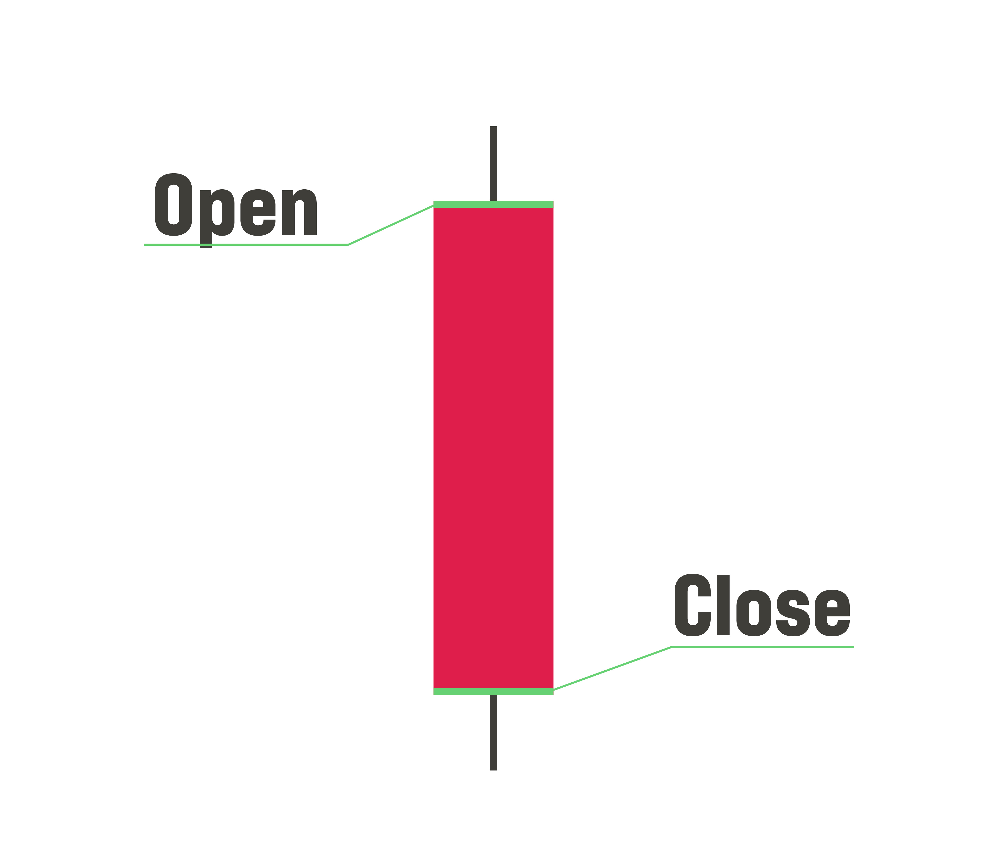

The most widely used form of of expressing and understanding the market is through a candlestick chart. A candle is able to show a lot of imformation through a few lines and a color. The candle is composed of a candle body and upper and lower wicks. The top of the top wick is the highest price and the bottom wick is the lowest price that the stock reached within a time frame. Each candle can be set to different time frames ranging from 1 minute to 1 month. Every trader uses different time frames based on their preferences and experiences. The color of the candle determines the opening and closing price of the stock:
A green candle means that the opening price is the bottom of the body and the closing price is the top of the body.
A red candle means that the opening price is the top of the body and the closing price is the bottom of the body.
The volume is the total amount of shares traded within a specific time frame. It represents the number of buyers and sellers there are on a stock. Volume is one of the most important information because it can tell a trader the liquidity of a stock. The more volume there is on a stock, the more traders there are, which increases the chance of the stock moving.
Support is, in essence, a price area where large amounts of buyers come in the market. If the price action bounces off the support area, the stock is considered bullish. If the price action breaks through the support area, the stock is considered bearish.
Resistance is, in essence, a price area where sellers come in the market. If the price action breaks through the resistance area, the stock is considered bullish. If the price action gets rejected at the resistance area, the stock is considered bearish.
Leverage of speed and filling the user’s buy order. The user risk paying a higher price than intended. It is mostly used by day traders to move in and out of stocks as quickly as possible.
Leverage of buying at the price the user wants. The user risk not having their order filled as the stock make higher moves.
Stop-loss is a more-advanced sell order type that triggers when the stock reach below the price specified by the user. Once the stop-loss triggers, the order automatically change into a “market sell” order that will trigger immediately. Stop-loss goes beyond than just an order type. Stop-loss is a method of managing risk to protect one’s capital. It is generally advised to have a stop-loss plan before acquiring position in a stock. There are two ways to set up a stop-loss order: manually and mentally. Manual stop-loss is the process of using the brokerage to set up the order type with the specified price for the stop-loss to trigger. Mental stop-loss is the process of watching the market to identify when price goes below the specified price and then use the “market sell” order type. The conflict with this order type is the user’s emotions and ego. With the greater emotions and ego while trading, it blinds the user to not set the stop-loss. This could result in some unforeseen losses.
Once the stop-loss triggers, the order automatically change into a “market sell” order that will trigger immediately.
Technical analysis is the use of charts, candlestick analysis, and special indicators to analyze stocks. It differs from fundamental analysis since the user does not need to know any information about the company of the stock. Patterns and technical indications are used to determine the entry point and exit of a trade. This form of analysis is based on the notion that history tends to repeat itself inside the market. Technical indicators are mathematical instruments developed to help trader understand the candles easier. Some examples of common indicators can be found here.
Chart patterns are shapes and trends formed by the candles of a chart that are commonly used to determine the movement of a stock. Patterns may seem random but each pattern is backed by the price action and trends of its charts. Patterns may be the first step in determining a stock's direction but it is not guaranteed unless it is backed up by other factors. This will be covered more in the Premium Content. Some examples of common patterns can be found here.